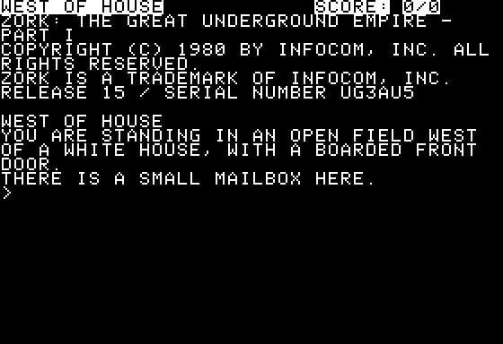
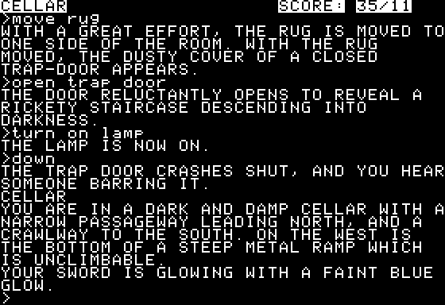

<meta charset="utf-8">
<meta name="viewport" content="width=device-width, initial-scale=1">
<title>Zork I</title>
<link rel="preconnect" href="https://fonts.googleapis.com">
<link rel="stylesheet" href="https://fonts.googleapis.com/css2?family=Lato:wght@400;700;900&family=IBM+Plex+Mono:wght@400;500&display=swap">
<style>
:root{
  --bg:#23262d; --paper:#e9e7e1; --surface:#ffffff; --surface-2:#f1efea; --line:#d5d3cc; --line-soft:#e0ded8;
  --ink:#2f3136; --ink-soft:#55585f; --ink-mute:#80838a;
  --link:#1f5fa8; --link-hover:#154480; --accent:#1f5fa8;
  --amber:#c25a00; --cyan:#1f5fa8; --coral:#d04a3a; --green:#2a8a4a; --violet:#4a5bd6; --hl:#fff0c2;
  --chip:#2f3136; --chip-ink:#ffffff;
  --c64blue:#40318d; --c64grey:#686868;
  --fd:'Lato',system-ui,sans-serif; --fb:'Lato',system-ui,sans-serif; --fm:'IBM Plex Mono',ui-monospace,Menlo,monospace;
  --col:1080px; --gx:68px; --fs:17px; --lh:1.6; --hw:900; --h1:46px; --h2:26px; --sy:48px; --pp:26px; --r:10px;
  --plate-shadow:0 1px 2px rgba(0,0,0,.05),0 4px 14px rgba(0,0,0,.05);
}
*{box-sizing:border-box}
html{background:var(--bg);min-height:100%}
body{background:var(--paper);color:var(--ink);font-family:var(--fb);font-size:var(--fs);line-height:var(--lh);max-width:var(--col);margin:0 auto;min-height:100vh;padding:0 0 4rem}
h1,h2,h3{font-weight:var(--hw);letter-spacing:-.01em;text-wrap:balance;color:var(--ink);margin:0}
.wrap{padding:0 var(--gx)}
.hero{padding:48px var(--gx) 8px;text-align:left}
.eyebrow{font-family:var(--fm);font-size:12px;letter-spacing:.08em;text-transform:uppercase;color:var(--ink-mute);margin:0 0 10px}
.hero h1{font-size:var(--h1);line-height:1.15;letter-spacing:-.02em;margin:0 0 14px}
.hero .sub{margin:0 0 .6em;color:var(--ink-soft)}
section{padding:var(--sy) 0 24px}
section:last-of-type{border-bottom:none}
.fig{font-family:var(--fm);font-size:12px;letter-spacing:.08em;text-transform:uppercase;color:var(--ink-mute);margin:0 0 10px}
h2.t{font-size:var(--h2);margin-bottom:12px}
.lede{color:var(--ink-soft);margin:0 0 30px}
.plate{background:var(--surface);border:1px solid var(--line);border-radius:var(--r);padding:var(--pp);box-shadow:var(--plate-shadow)}
.cap{font-size:14px;color:var(--ink-mute);margin-top:14px;line-height:1.55}
.cap b{color:var(--ink);font-weight:700}
code{font-family:var(--fm);font-size:.82em;background:var(--chip);color:var(--chip-ink);border-radius:4px;padding:2px 6px;white-space:nowrap}

.zk-pair{display:grid;grid-template-columns:1fr 1fr;gap:18px;align-items:start}
.zk-pair img{width:100%;display:block;border-radius:4px;image-rendering:pixelated;background:#000}
.zk-bar{display:flex;flex-wrap:wrap;gap:8px;align-items:center;margin:0 0 12px}
.zk-bar button{font:inherit;font-size:13px;padding:5px 11px;border:1px solid var(--line);background:var(--surface-2);color:var(--ink);border-radius:6px;cursor:pointer;max-width:100%}
.zk-bar button:hover{border-color:var(--ink-mute)}
.zk-bar button.on{background:var(--ink);color:#fff;border-color:var(--ink)}
.zk-bar label{font-size:14px;color:var(--ink-soft);display:flex;gap:6px;align-items:center}
.zk-label{display:block;font-size:14px;color:var(--ink-soft);margin:0 0 6px}
.zk-input{width:100%;font-family:var(--fm);font-size:16px;padding:9px 12px;border:1px solid var(--line);border-radius:6px;background:#000;color:#fff;margin:0 0 10px}
.zk-input:focus{outline:2px solid var(--green)}
.zk-table{border-collapse:collapse;font-size:14px;margin:10px 0;width:100%}
.zk-table th,.zk-table td{border-bottom:1px solid var(--line-soft);padding:5px 8px;text-align:left;vertical-align:top}
.zk-table th{font-weight:700;color:var(--ink-soft);font-size:13px}
.zk-table code{white-space:normal}
.zk-click tr[data-i],.zk-click tr[data-obj]{cursor:pointer}
.zk-click tr[data-i]:hover td,.zk-click tr[data-obj]:hover td{background:var(--surface-2)}
.zk-table tr.now td{background:var(--hl)}
.zk-table tr.zk-sum td{font-weight:700;border-bottom:none}
.zk-table tr.zk-dim td{color:var(--ink-mute)}
.zk-mute{color:var(--ink-mute);font-size:.92em;margin-left:4px}
.zk-warn{color:var(--amber)}
.zk-mono{font-family:var(--fm);font-size:13px}
.zk-note{font-size:14px;color:var(--ink-soft);margin:10px 0 0}
.zk-words{overflow-x:auto}
.zk-detail{margin-top:8px}
.zk-enc{display:flex;flex-wrap:wrap;gap:14px;align-items:center;margin-top:10px}
.zk-chars{display:flex;gap:4px}
.zk-ch{width:58px;border-radius:6px;padding:4px 0;text-align:center;font-family:var(--fm);color:#fff}
.zk-ch b{display:block;font-size:17px}
.zk-ch span{display:block;font-size:10.5px;opacity:.9;white-space:nowrap;overflow:hidden;text-overflow:ellipsis;padding:0 2px}
.zk-bits{font-family:var(--fm);font-size:14px;letter-spacing:.02em}
.zk-bits span{padding:1px 2px;border-radius:3px;color:#fff}
.zk-bits .zk-end{background:#80838a}
.zk-bytes{font-family:var(--fm);font-size:15px;font-weight:500}
.zk-c0{background:#4a5bd6}.zk-c1{background:#2a8a4a}.zk-c2{background:#c25a00}.zk-c3{background:#7a4fb0}.zk-c4{background:#1f7a8c}.zk-c5{background:#d04a3a}
.zk-card{min-height:200px}
.zk-h3{font-size:19px;margin:4px 0 8px}
.zk-kv{display:grid;grid-template-columns:auto 1fr;gap:3px 14px;font-size:14px;margin:0 0 6px}
.zk-kv dt{color:var(--ink-mute)}.zk-kv dd{margin:0}
.zk-diskwrap{overflow-x:auto}
.zk-disk{width:100%;max-width:700px;display:block}
.zk-pages{width:100%;max-width:704px;display:block}
.zk-info{font-family:var(--fm);font-size:13px;color:var(--ink-soft);min-height:3.2em;margin-top:8px}
.zk-legend{display:flex;flex-wrap:wrap;gap:6px 16px;font-size:13px;color:var(--ink-soft);margin-top:8px}
.zk-legend i{display:inline-block;width:12px;height:12px;border-radius:2px;margin-right:6px;vertical-align:-1px}
.zk-screen{background:#000;color:#fff;font-family:var(--fm);font-size:12.5px;line-height:1.32;padding:10px 12px;margin:0;border-radius:4px;overflow-x:auto;white-space:pre}
.zk-screen .zk-inv{background:#fff;color:#000}
.zk-screen .zk-addr{color:#7fb08f;margin-right:10px}
.zk-shot{width:100%;display:block;border-radius:4px;image-rendering:pixelated;background:#000}
@media (max-width:760px){:root{--gx:16px;--pp:14px}.zk-pair{grid-template-columns:1fr}.zk-ch{width:46px}}
</style>
<!-- tabs -->
<header class="hero">
  <p class="eyebrow">1980 · Infocom</p>
  <h1>Zork I</h1>
  <p class="sub">Zork I on the Apple II is two programs: a 6,656-byte interpreter written for the 6502, and an 81,920-byte story written for the Z-machine, a computer Infocom made up. The story is bigger than the machine's memory, so the interpreter keeps its first 18 KB and reads the rest from the disk a page at a time, while the player waits at the prompt.</p>
</header>
<main class="wrap">

<section>
  <p class="fig">01 · The game</p>
  <h2 class="t">The game</h2>
  <p class="lede">The player stands west of a white house, in a field, with a mailbox. Under the house is a dungeon, the Great Underground Empire, with nineteen treasures in it and a thief who wants them.</p>
  <div class="zk-pair">
    <div class="plate"><p class="cap">The first screen, after the banner. The top row is the status line: the room's name and the score over the number of moves.</p></div>
    <div class="plate"><p class="cap">Eleven moves later, in the cellar, with the lamp lit and 35 points scored. Everything the player typed is in lower case; everything the game prints is in capitals.</p></div>
  </div>
  <p>Everything happens in words. The player types a sentence, <code>take the lamp</code> or <code>open the trap door</code>, and the game answers in a paragraph. Points come from finding the treasures and from putting them in the trophy case in the house's living room; 350 is the most there is.</p>
  <p>Two programs share the work. The <b>interpreter</b> is 6502 code: it reads the keyboard, prints on the screen and reads the disk. The <b>story</b> is the game itself (the parser, the rooms, the objects, and every sentence), written in Z-code, the instructions of Infocom's imaginary computer. The interpreter runs the story the way the Apple II runs the interpreter, one instruction at a time.</p>
</section>

<section id="words">
  <p class="fig">02 · The parser's first half</p>
  <h2 class="t">The interpreter reads six letters of each word</h2>
  <p class="lede">The interpreter cuts each line into words and looks every word up in the story's dictionary before the story sees any of it. A word is known by its first six letters, so <code>lantern</code> and <code>lanterns</code> are the same word.</p>
  <div class="plate">
    <label class="zk-label" for="zk-line">Type a line, as at the game's <code>&gt;</code> prompt</label>
    <input id="zk-line" class="zk-input" maxlength="160" spellcheck="false" autocomplete="off" value="take the brass lantern, then go north">
    <div class="zk-bar" id="zk-tries"></div>
    <div id="zk-words" class="zk-words"></div>
    <div id="zk-word" class="zk-detail"></div>
    <p class="cap">The interpreter's own code, ported to the page: the copy of the line into the text buffer (<code>$1D69</code>), the split into words (<code>$130B</code>), the encoder (<code>$1A25</code>) and the dictionary search (<code>$1432</code>), reading the dictionary from the listing's bytes. A test runs each routine on the same bytes in the kit's 6502 simulator beside the port: every dictionary word, 2,000 random words with capitals and punctuation in them, 511 whole lines, and every object's name, with the same result every time. What each bit of a dictionary entry's data means is read from the words that carry it: the story's own parser, which reads them, is Z-code on the disk, and it was not traced.</p>
  </div>
  <p>A space, a question mark, or a RETURN ends a word and is thrown away. The story's dictionary names three more separators (the comma, the full stop, and the quotation mark), and each of those ends a word and is a word of its own, so <code>take lamp, sword</code> is four words. For each word the interpreter writes four bytes into the parse buffer: the address of its dictionary entry, or 0 for a word it does not know, then its length and where it starts in the line. The story's parser takes over from there.</p>
  <p>A word becomes six 5-bit characters before the search (<code>$1A25</code>). The small letters are 6 to 31. A digit or a punctuation mark takes two characters, a shift and then its place in a third alphabet, and a character in none of the alphabets takes four. A capital would take a shift too, but the interpreter makes every capital small as it copies the line (<code>$1D82</code>), so none reaches the encoder. A word shorter than six is padded with 5s. The six pack into two 16-bit words, three to a word, with the top bit of the second set to mark the end. Those four bytes are what the dictionary holds, and the search compares them with its 617 entries one by one (<code>$1432</code>).</p>
  <p>Each entry has three more bytes, which the interpreter never reads. The first is a set of flags, the kinds of word it can be, and the next two are numbers for those kinds: the verb's number, the adjective's, or for a direction the number of the property that holds that exit in every room. <code>north</code> is direction 31, and property 31 of a room is where north leads (<a href="levels.html">the map</a>). When a word is two kinds at once, the low two bits of the flags say which kind's number comes first.</p>
</section>

<section id="objects">
  <p class="fig">03 · The world</p>
  <h2 class="t">Every room and every thing is one of 255 objects</h2>
  <p class="lede">The house, the mailbox, the leaflet in the mailbox and the player are all entries in one table. Rooms are the 110 objects inside an object with no name, and a thing is where it is because of the object it sits in.</p>
  <div class="plate">
    <div class="pick"><a class="step" id="zk-oprev" aria-label="Previous object">‹</a><select id="zk-obj" aria-label="Object"></select><a class="step" id="zk-onext" aria-label="Next object">›</a></div>
    <div id="zk-card" class="zk-card"></div>
    <p class="cap">Read from the object table in the listing (story <code data-part="story">$0148</code>, memory <code data-part="">$2D48</code>) as the interpreter reads it (<code>$16BB</code>, <code>$167D</code>); the names are decoded by a port of the interpreter's string printer (<code>$18D2</code>), held to <code>$0DDD</code> for every object. Click a parent, a child or a room to go to it. The properties' meanings come from the story's code, named beside each; the rest are shown as bytes.</p>
  </div>
  <p>An object is nine bytes: 32 attribute flags, then the numbers of its parent, its next sibling, and its first child, then the address of its property table (<code>$16BB</code>). Moving the lamp into the player's hands is moving one entry from one list of children to another. The property table holds the object's short name and its properties, numbered 1 to 31 and kept in descending order (<code>$167D</code>). A property the object lacks is read from a table of 31 defaults.</p>
  <p>Exits are properties too. Each direction has a property number, from 31 for north down to 19 for <code>land</code>, and the story's walking routine (story <code data-part="story">$6808</code>) decides what an exit does from its length alone:</p>
  <div class="plate"><table class="zk-table">
    <tr><th>Length</th><th>What it holds</th><th>What happens</th></tr>
    <tr><td>1</td><td>a room</td><td>the player goes there</td></tr>
    <tr><td>2</td><td>a message</td><td>the message is printed and the player stays</td></tr>
    <tr><td>3</td><td>a routine</td><td>the routine is called; the player goes where it says, if anywhere</td></tr>
    <tr><td>4</td><td>a room, a variable and a message</td><td>the player goes there if the variable is not 0, or else sees the message, or <code>You can't go that way.</code></td></tr>
    <tr><td>5</td><td>a room, a door and a message</td><td>the player goes there if the door is open (attribute 13), or else sees the message, or <code>The ... is closed.</code> with the door's name</td></tr>
  </table></div>
  <p>Where a room has no exit at all in the direction asked, the routine checks global 118 first. In a dark place it rolls <code>random 100</code>, and on 74 rolls in 100 it prints <code>Oh, no! You have walked into the slavering fangs of a lurking grue!</code> and the player dies (story <code data-part="story">$68B9</code>). The first try, live, in the cellar without the lamp, was one of the 74.</p>
</section>

<section id="disk">
  <p class="fig">04 · The disk</p>
  <h2 class="t">Two programs share one disk</h2>
  <p class="lede">The interpreter and its loader take the first three tracks, and the story the next twenty, a page of the story to each sector. The other twelve are empty, and the disk has no catalog.</p>
  <div class="plate">
    <div class="zk-bar"><button type="button" class="on" data-disk="game">The game disk</button><button type="button" data-disk="save">A save disk</button></div>
    <div class="zk-diskwrap"><canvas id="zk-disk" class="zk-disk" width="700" height="440"></canvas></div>
    <div id="zk-diskinfo" class="zk-info">Point at a sector.</div>
    <div id="zk-disklegend" class="zk-legend"></div>
    <p class="cap">Tracks run across, sectors down, in the order the game numbers them. The data-field marks are from the disk image (<code>disk.py info</code>); where each story page lies is the interpreter's rule (<code>$1DC1</code>), and the order of the sectors round a track is its table at <code>$2BB8</code>, read here from the listing. The save disk follows <code>$1EC8</code> and <code>$2064</code>.</p>
  </div>
  <p>The Apple II's boot ROM reads sector 0 of track 0, which is DOS 3.3's boot sector with its code unchanged. That sector reads ten sectors of track 0 into <code>$2200-$2BFF</code> and jumps to <code>$2300</code>, where there is now a loader and a set of disk routines like DOS's. The loader reads tracks 1 and 2 into <code>$0800-$21FF</code>, the interpreter, and jumps to it. The disk routines stay in memory for the rest of the game.</p>
  <p>Story page <i>n</i> is on track 3 + <i>n</i> ÷ 16, sector <i>n</i> mod 16 (<code>$1DC1</code>), so the story starts at track 3 and fills twenty tracks exactly: 320 pages of 256 bytes. The disk routines turn each sector number into a position round the track through a table (<code>$2BB8</code>), which puts consecutive pages four sectors apart: while the 6502 copies one page out of the disk's buffer, three sectors pass under the head, and the next page arrives as the routines are ready for it.</p>
  <p>The copy protection is one byte. DOS starts each sector's data with the marks <code>D5 AA AD</code>; tracks 1 to 22 of this disk use <code>D5 AA BC</code>, and the game's disk routines read only that (<code>$24FB</code>) and write only that (<code>$245C</code>). A disk reader that expects DOS's marks finds no data on those tracks. A save is written with <code>BC</code> too, into sectors that are already on the disk: the disk routines find a sector by its address marks, so a save disk has to be formatted first, by DOS. The routine that formats a disk is in memory at <code>$2AAF</code>, and nothing calls it.</p>
  <p>A save takes four tracks, from track 3 + 4 × the position, so the eight positions fill tracks 3 to 34. Each one holds the Z-machine's registers, its stack, and the first 46 pages of the story, everything the story can change.</p>
</section>

<section id="paging">
  <p class="fig">05 · Memory</p>
  <h2 class="t">Only the first 18 KB of the story stays in memory</h2>
  <p class="lede">The story is 80 KB, and a 48K Apple II has room for 37 KB of it. The interpreter keeps the story's first 72 pages for good and lends 76 more pages of memory to the rest, one page of the story at a time.</p>
  <div class="plate">
    <div class="zk-bar"><button type="button" class="on" data-when="west">At the first prompt</button><button type="button" data-when="cellar">Eleven moves later</button></div>
    <canvas id="zk-pages" class="zk-pages" width="704" height="300"></canvas>
    <div id="zk-pageinfo" class="zk-info">Point at a page.</div>
    <div class="zk-legend"><span><i style="background:#9aa0a8"></i>kept in memory</span><span><i style="background:#2a8a4a"></i>in a buffer, used last</span><span><i style="background:#b8dcc4"></i>in a buffer, used longest ago</span><span><i style="background:#ffffff;border:1px solid #d5d3cc"></i>on the disk only</span></div>
    <p class="cap">The 320 pages of the story, 32 to a row. Which page each buffer held, and their order of use, are read from the interpreter's tables at <code>$2200-$23FF</code> in two snapshots: the game waiting at its first prompt, and in the cellar after eleven moves.</p>
  </div>
  <p>The story divides itself in two. The first part holds everything that changes as the game is played (the objects, the variables, and the buffers the parser writes) and the tables the story reads, the dictionary among them. The story's header says where the first part ends: high memory starts at story <code data-part="story">$476C</code>. Above that are the routines and most of the strings, which are only ever run or printed. The interpreter loads pages 0 to <code>$47</code> into <code>$2C00-$73FF</code> once, at the start, and never reads them from the disk again. The Source tab has two listings: the interpreter, as memory holds it at that moment, and <a href="source-story.html">the story</a>, all of it, at the story's own addresses.</p>
  <p>Every other page goes into one of the buffers from <code>$7400</code> up to the top of memory, 76 of them on a 48K machine and 12 with 32K (<code>$08C8</code>). The interpreter finds a page by looking for it among the buffers' page numbers (<code>$18B5</code>), keeps the buffers in a chain from the one used last to the one used longest ago (<code>$1880</code>), and when the page is in none of them it reads the page from the disk into the buffer at the old end of the chain (<code>$1752</code>, <code>$1801</code>). At the first prompt fourteen buffers are in use, and eleven moves later 56. Once all 76 are full, every page the story has not used for a while costs a turn of the disk.</p>
  <p>The interpreter tests for memory from <code>$BF00</code> down, so a 64K or 128K Apple II gets the same 76 buffers as a 48K one; the language card's extra 16K is never used.</p>
</section>

<section id="score">
  <p class="fig">06 · The score</p>
  <h2 class="t">Where the 350 points come from</h2>
  <p class="lede">The points are written into the objects. A treasure carries two numbers, one paid the first time it is taken and one paid while it lies in the trophy case, and four rooms pay the first time the player walks in.</p>
  <div class="plate">
    <div id="zk-points"></div>
    <p class="cap">Properties 13 and 12 of every object, from the listing. Click a row to see the object above. The story's code: story <code data-part="story">$61EA</code> pays property 13 and sets it to 0; the living room's routine (story <code data-part="story">$8814</code>) adds up property 12 of the trophy case's contents (story <code data-part="story">$898C</code>); story <code data-part="story">$CC4C</code> pays the Drafty Room's 13 points from global 35.</p>
  </div>
  <p>Property 13 is paid once: the routine that adds it to the score sets it to 0 (story <code data-part="story">$61EA</code>). Property 12 is different. After every <code>take</code> in the living room and every <code>put</code> into the case, the story works the score out again from the start: the points scored elsewhere, kept in global 129, plus property 12 of every object in the case (story <code data-part="story">$8814</code>). Taking a treasure back out of the case takes its points away.</p>
  <p>The table comes to 337. The last 13 are not in any object: they are global 35, paid once by the Drafty Room's routine to a player who reaches it with a light (story <code data-part="story">$CC4C</code>). Dying costs 10 (story <code data-part="story">$6467</code>).</p>
</section>

<section id="screen">
  <p class="fig">07 · The screen</p>
  <h2 class="t">The screen, read back from memory</h2>
  <p class="lede">The game draws on the Apple II's 40-column text page, a kilobyte of memory where each byte is a letter. This is that kilobyte from the emulator, set in type.</p>
  <div class="plate">
    <div class="zk-bar"><button type="button" class="on" data-screen="west">At the first prompt</button><button type="button" data-screen="cellar">Eleven moves later</button><label><input type="checkbox" id="zk-rows"> Show where each row is in memory</label></div>
    <div class="zk-pair"><pre id="zk-screen" class="zk-screen" aria-label="The text screen, rebuilt from memory"></pre></div>
    <p class="cap">Left: <code>$0400-$07FF</code> from the snapshot, read by the site's Apple II library (<code>Apple2.text</code>, which the kit holds to its own screen reader for every byte value). Right: the kit's picture of the same snapshot. The letters agree on every row.</p>
  </div>
  <p>Row 0 is the status line, redrawn before every input (<code>$1CD7</code>). The text window is rows 1 to 23, so the Monitor's scrolling leaves the status line where it is. The words on the status line are in inverse, and the spaces between are not: the interpreter turns inverse on and then clears the row with the Monitor's <code>CLREOL</code>, which writes ordinary spaces.</p>
  <p>Everything the game prints is in capitals (<code>$1B90</code>), the one case every Apple II can show. The interpreter collects each line at <code>$0200</code> and breaks it at the last space before column 40, so a word never splits across two rows (<code>$1BB5</code>). It counts the lines since the last input, and when they fill the window it prints <code>[MORE]</code> in inverse and waits for a key (<code>$1C5B</code>).</p>
  <p>The rows of the text page are not in order in memory: row 1 starts 128 bytes after row 0, and row 8 only 40 bytes after row 0. The tick box shows each row's address.</p>
</section>

</main>
<footer style="margin:16px 0 0;padding:22px var(--gx) 0;border-top:1px solid #e0ded8;font-family:'IBM Plex Mono',ui-monospace,Menlo,monospace;font-size:12px;color:#80838a"><a href="https://github.com/gamesexplained/gamesexplained" style="color:#1f5fa8;text-decoration:none">GitHub</a> · <a href="https://discord.gg/3V9GWyRDWV" style="color:#1f5fa8;text-decoration:none">Discord</a><br>© Games Explained contributors. Write-ups, facts and symbol maps are available under <a href="https://creativecommons.org/licenses/by-sa/4.0/" style="color:#1f5fa8;text-decoration:none">CC BY-SA 4.0</a>; code under <a href="https://opensource.org/licenses/MIT" style="color:#1f5fa8;text-decoration:none">MIT</a></footer>
<script src="../../lib/apple2.js"></script>
<script>
/* zork.js */
// The story's resident part, read from the listing's bytes the way the interpreter reads it. Every
// function here is a port of a routine of the interpreter, named beside it, and test_zork.js runs
// the routine itself on the same bytes in the kit's 6502 simulator and compares the two.
const Zork = (function () {
  const BASE = 0x2C00;                 // story address 0 in memory ($BA-$BB)
  const ALPHABET2 = 0x19B5;            // the punctuation alphabet, 24 characters
  const w = (ram, s) => ram[BASE + s] << 8 | ram[BASE + s + 1];
  // the exits' property numbers, which the direction words' dictionary entries give (north is 31)
  const EXITS = { 31: 'north', 30: 'east', 29: 'west', 28: 'south', 27: 'north-east', 26: 'north-west',
                  25: 'south-east', 24: 'south-west', 23: 'up', 22: 'down', 21: 'in', 20: 'out', 19: 'land' };
  const header = ram => ({ dict: w(ram, 8), objects: w(ram, 10), globals: w(ram, 12), static: w(ram, 14), abbrevs: w(ram, 24) });

  // $18D2 with $19D9, $19CD and $195F: the text of the string at story address s. Characters 2 and
  // 3 shift the next one an alphabet on or back, 4 and 5 lock the shift; 1 prints an abbreviation.
  function text(ram, s) {
    const h = header(ram);
    let out = '', lock = 0, shift = -1, word = 0, i = 0, done = false;
    const next = () => {                                  // $19D9: null after the end bit
      if (done) return null;
      if (i === 0) { word = w(ram, s); s += 2; }
      const c = i === 0 ? (word >> 10) & 31 : i === 1 ? (word >> 5) & 31 : word & 31;
      if (i === 2) { i = 0; if (word & 0x8000) done = true; } else i++;
      return c;
    };
    const alphabet = () => { if (shift >= 0) { const a = shift; shift = -1; return a; } return lock; };   // $19CD
    for (let c = next(); c !== null; c = next()) {
      if (c === 0) out += ' ';
      else if (c === 1) {                                 // $195F
        const n = next();
        out += text(ram, 2 * w(ram, h.abbrevs + 2 * n));
        shift = -1;
      } else if (c < 4) shift = (alphabet() + 2 + c) % 3;
      else if (c < 6) lock = (alphabet() + c) % 3;
      else {
        const a = alphabet();
        if (a === 0) out += String.fromCharCode(c + 0x5B);
        else if (a === 1) out += String.fromCharCode(c + 0x3B);
        else if (c === 6) { const hi = next(), lo = next(); out += String.fromCharCode(((hi << 5) | lo) & 0xFF); }
        else if (c === 7) out += '\n';
        else out += String.fromCharCode(ram[ALPHABET2 + c - 8]);
      }
    }
    return out;
  }

  // $1B1D: which alphabet a typed character is in; a byte of $80 or more comes back as it is.
  const alphabetOf = c => (c >= 0x61 && c < 0x7B ? 0 : c >= 0x41 && c < 0x5B ? 1 : c === 0 || c >= 0x80 ? c : 2);

  // $1A25 and $1B3C: the six 5-bit characters a word becomes, and the four bytes they pack into, as
  // the dictionary holds them. $1B0B looks for punctuation from place 36 down, 13 places past the
  // end of the table, so the search is made the same way on the same bytes.
  function encode(ram, word) {
    const ch = [];
    for (let k = 0; k < 6; k++) ch.push(k < word.length ? word.charCodeAt(k) & 0xFF : 0);
    ch.push(0xFF);                                      // $D9, set to $FF at start-up, read as a seventh
    const z = [];
    let lock = 0;
    const put = v => { z.push(v & 0xFF); return z.length === 6; };
    for (let k = 0; k < 6 && z.length < 6; k++) {
      const c = ch[k];
      if (c === 0) { if (put(5)) break; continue; }
      const a = alphabetOf(c);
      if (a !== lock) {
        const after = alphabetOf(ch[k + 1]);
        const step = ((a - lock + 3) & 0xFF) % 3;        // A67 and A91, in 8 bits as there
        if (after === a) { lock = a; if (put(step + 3)) break; }
        else if (put(step + 1)) break;
      }
      if (a === 0) { if (put(c - 0x5B)) break; }
      else if (a === 1) { if (put(c - 0x3B)) break; }
      else {
        let x = 36;
        while (x >= 0 && ram[ALPHABET2 + x] !== c) x--;
        if (x >= 0) { if (put(x + 8)) break; }
        else { if (put(6) || put((c >> 5) & 3) || put(c & 31)) break; }
      }
    }
    while (z.length < 6) z.push(5);
    const bytes = [((z[0] << 2) | ((z[1] >> 3) & 3)) & 0xFF, ((z[1] << 5) | z[2]) & 0xFF,
                   (((z[3] << 2) | ((z[4] >> 3) & 3)) & 0xFF) | 0x80, ((z[4] << 5) | z[5]) & 0xFF];
    return { z, bytes };
  }

  // $1432: the story address of the dictionary entry whose four bytes these are, or 0.
  function lookup(ram, bytes) {
    const d = header(ram).dict, seps = ram[BASE + d], size = ram[BASE + d + 1 + seps];
    const count = w(ram, d + 2 + seps), first = d + 4 + seps;
    for (let e = 0; e < count; e++) {
      const a = first + size * e;
      if ([0, 1, 2, 3].every(k => ram[BASE + a + k] === bytes[k])) return a;
    }
    return 0;
  }
  function dictionary(ram) {
    const d = header(ram).dict, seps = ram[BASE + d], size = ram[BASE + d + 1 + seps];
    const count = w(ram, d + 2 + seps), first = d + 4 + seps, out = [];
    const separators = Array.from(ram.subarray(BASE + d + 1, BASE + d + 1 + seps), c => String.fromCharCode(c));
    for (let e = 0; e < count; e++) { const a = first + size * e; out.push({ a, word: text(ram, a), data: Array.from(ram.subarray(BASE + a + 4, BASE + a + 7)) }); }
    return { separators, size, entries: out };
  }

  // $16BB, $167D: an object's entry, and its property list in the order the list holds it.
  function object(ram, n) {
    const h = header(ram), a = h.objects + 62 + 9 * (n - 1);
    const attrs = [];
    for (let k = 0; k < 32; k++) if (ram[BASE + a + (k >> 3)] & (0x80 >> (k & 7))) attrs.push(k);
    const p = w(ram, a + 7), len = ram[BASE + p];
    const props = [];
    for (let q = p + 1 + 2 * len; ram[BASE + q]; ) {
      const b = ram[BASE + q], size = (b >> 5) + 1;
      props.push({ num: b & 31, a: q, data: Array.from(ram.subarray(BASE + q + 1, BASE + q + 1 + size)) });
      q += 1 + size;
    }
    return { n, a, attrs, parent: ram[BASE + a + 4], sibling: ram[BASE + a + 5], child: ram[BASE + a + 6],
             name: len ? text(ram, p + 1) : '', props, propsAt: p };
  }
  function children(ram, n) {
    const out = [];
    for (let c = object(ram, n).child; c; c = object(ram, c).sibling) out.push(c);
    return out;
  }

  // $1D69-$1D8F, the end of the line reader: the line GETLN1 left at $0200, with its RETURN, copied
  // after the text buffer's size byte, no more than the size allows, capitals made small. Returns the
  // count, which sread hands to the split below.
  function type(ram, textAt, line) {
    const typed = Array.from(line + '\r', ch => ch.charCodeAt(0) & 0x7F);
    const count = Math.min(typed.length, ram[textAt]);
    for (let k = 0; k < count; k++) {
      const c = typed[k];
      ram[textAt + 1 + k] = c >= 0x41 && c < 0x5B ? c | 0x20 : c;
      if (c === 0x0D) break;
    }
    return count;
  }

  // $130B-$13CA, the half of sread after the line is read: the count characters at text + 1 split
  // into words in the parse buffer, through ($84),Y as the interpreter writes them, so an offset past
  // 255 wraps to the start of the buffer. ram is changed as the interpreter changes memory; the
  // addresses are memory's. Returns the words as the interpreter found them.
  function split(ram, textAt, parseAt, count) {
    const h = header(ram), d = h.dict, seps = Array.from(ram.subarray(BASE + d + 1, BASE + d + 1 + ram[BASE + d]));
    const breaks = [0x20, 0x2E, 0x2C, 0x3F, 0x0D, 0x0A, 0x09, 0x0C];          // $13E5
    const isSep = c => c !== 0 && seps.includes(c);                         // $1404
    const ends = c => isSep(c) || breaks.includes(c);                       // $13ED
    const P = y => parseAt + (y & 0xFF);
    let left = count, len = 0, pos = 1, off = 2, chars = [];
    const words = [];
    ram[P(1)] = 0;
    for (;;) {
      if (ram[P(0)] === ram[P(1)]) break;                                   // $131F
      if ((left | len) === 0) break;
      if (len === 6) while (left && !ends(ram[textAt + pos])) { pos++; left--; len++; }   // $13CD
      let wordEnds = false;
      if (len === 0) {
        chars = [];
        ram[P(off + 3)] = pos;                                              // $134D
        const c = ram[textAt + pos];
        if (isSep(c)) { chars = [c]; len = 1; left--; pos++; wordEnds = true; }
        else if (breaks.includes(c)) { pos++; left--; continue; }
      }
      if (!wordEnds) {
        if (left !== 0 && !ends(ram[textAt + pos])) {
          if (chars.length < 6) chars.push(ram[textAt + pos]);
          left--; len++; pos++;
          continue;
        }
      }
      if (len === 0) continue;                                              // $1395
      ram[P(off + 2)] = len;
      const enc = encode(ram, String.fromCharCode(...chars));
      const at = lookup(ram, enc.bytes);
      ram[P(off)] = at >> 8; ram[P(off + 1)] = at & 0xFF;
      words.push({ text: String.fromCharCode(...chars), at, len, pos: ram[P(off + 3)], off: off & 0xFF });
      off = (off + 4) & 0xFF;
      ram[P(1)] = (ram[P(1)] + 1) & 0xFF;
      len = 0;
    }
    return words;
  }

  // The machine at the Z-machine's start, from the two listings: the interpreter's, and the story's
  // first pages laid over it as the start-up reads them ($088D-$08C5): page 0 to $2C00, header byte
  // 5 made $FF ($0895), then the rest of the resident pages, header byte 4 plus 1 of them, $48.
  function machine(I, S) {
    const n = (S.ram[4] + 1) * 0x100;
    I.ram.set(S.ram.subarray(0, n), BASE); I.has.fill(1, BASE, BASE + n);
    I.ram[BASE + 5] = 0xFF;
    return I;
  }

  return { BASE, EXITS, header, text, encode, lookup, dictionary, object, children, type, split, machine };
})();
// end of zork.js
</script>
<script>
// What every page of this game reads from the story the same way: names for its objects, its exits
// as the story's walking routine reads them (story $6808), and its parts by address (the header).
const $ = id => document.getElementById(id);
const esc = s => String(s).replace(/[&<>"]/g, c => ({ '&': '&amp;', '<': '&lt;', '>': '&gt;', '"': '&quot;' }[c]));
const h2 = v => v.toString(16).toUpperCase().padStart(2, '0');
const h4 = v => v.toString(16).toUpperCase().padStart(4, '0');
const h5 = h4;
const hex = (v, n = 4) => '$' + v.toString(16).toUpperCase().padStart(n, '0');
const word = (ram, s) => ram[Zork.BASE + s] << 8 | ram[Zork.BASE + s + 1];

const EXITS = Zork.EXITS;

// Rooms are the children of object 117; the objects with the walls, the air and the hands are
// object 23's.
function Objects(ram) {
  const ROOMS = 117, list = [];
  for (let n = 1; n <= 255; n++) {
    const o = Zork.object(ram, n);
    list.push({ n, o, label: o.name || (n === ROOMS ? '(no name: the rooms are inside it)' : n === 23 ? '(no name: things that are everywhere)' : '(no name)') });
  }
  return { ROOMS, list, byN: n => list[n - 1] };
}
const propOf = (o, num) => o.props.find(p => p.num === num);
function propValue(o, num) {
  const p = propOf(o, num);
  return p ? (p.data.length === 2 ? p.data[0] << 8 | p.data[1] : p.data[0]) : 0;
}

// story $6808: what an exit does follows from its length
function exits(o) {
  return o.props.filter(p => p.num >= 19).map(p => {
    const d = p.data, w = i => d[i] << 8 | d[i + 1], e = { dir: EXITS[p.num], num: p.num, len: d.length };
    if (d.length === 1) e.room = d[0];
    else if (d.length === 2) e.message = w(0) * 2;
    else if (d.length === 3) e.routine = w(0) * 2;
    else if (d.length === 4) { e.room = d[0]; e.variable = d[1]; e.message = w(2) * 2; }
    else { e.room = d[0]; e.door = d[1]; e.message = w(2) * 2; }
    return e;
  });
}
function exitText(objects, e, link) {
  const room = n => link(n, objects.byN(n).label);
  if (e.len === 1) return room(e.room);
  if (e.len === 2) return `blocked: a message at story <code data-part="story">${hex(e.message)}</code>`;
  if (e.len === 3) return `the routine at story <code data-part="story">${hex(e.routine)}</code> decides`;
  const g = e.variable >= 16 ? `global ${e.variable - 16}` : `local ${e.variable}`;
  if (e.len === 4) return `${room(e.room)}, once ${g} is not 0`;
  return `${room(e.room)}, through the ${link(e.door, objects.byN(e.door).label)} when it is open`;
}

// The story's parts, from its header (story $0000) and the decoder of the story file for the strings
function storyPart(ram, a) {
  const h = Zork.header(ram), himem = word(ram, 4);
  const parts = [[0, 'the header'], [0x40, 'the abbreviations\' text'], [h.abbrevs, 'the abbreviation table'],
                 [h.objects, 'the property defaults'], [h.objects + 62, 'the object table'],
                 [h.objects + 62 + 9 * 255, 'the property tables'], [h.globals, 'the globals'],
                 [h.globals + 2 * 168, 'the story\'s own tables, which it changes'], [h.static, 'the verb and sentence tables'],
                 [h.dict, 'the dictionary'], [himem, 'routines'], [0xE926, 'strings']];
  let name = parts[0][1];
  for (const [s, n] of parts) if (a >= s) name = n;
  return name;
}

// One object, as a card: where it is, what it holds, its attributes and properties.
function objectHTML(ram, objects, o, page) {
  const link = (n, label) => n ? `<a href="#" data-obj="${n}">${esc(label || objects.byN(n).label)}</a>` : '<span class="zk-mute">none</span>';
  const dict = Zork.dictionary(ram), byA = new Map(dict.entries.map(e => [e.a, e.word]));
  const adjectives = new Map();
  for (const e of dict.entries) if (e.data[0] & 0x20) {
    const v = (e.data[0] & 3) === 2 || !(e.data[0] & 0xD0) ? e.data[1] : e.data[2];
    adjectives.set(v, (adjectives.get(v) || []).concat(e.word));
  }
  let h = `<h3 class="zk-h3">${o.n} · ${esc(objects.byN(o.n).label)}</h3><dl class="zk-kv">`;
  h += `<dt>Inside</dt><dd>${o.parent ? link(o.parent) : '<span class="zk-mute">nothing: the object is nowhere</span>'}</dd>`;
  h += `<dt>Next to it</dt><dd>${link(o.sibling)}</dd>`;
  const kids = Zork.children(ram, o.n);
  h += `<dt>Holds</dt><dd>${kids.length ? kids.map(n => link(n)).join(', ') : '<span class="zk-mute">nothing</span>'}</dd>`;
  h += `<dt>Attributes</dt><dd>${o.attrs.length ? o.attrs.join(', ') : '<span class="zk-mute">none set</span>'}</dd>`;
  h += `<dt>Entry</dt><dd>story <code data-part="story">${hex(o.a)}</code>, properties at story <code data-part="story">${hex(o.propsAt)}</code></dd></dl>`;
  h += '<table class="zk-table"><tr><th>Property</th><th>Bytes</th><th>What the story does with it</th></tr>';
  for (const p of o.props) {
    let what = '';
    if (p.num >= 19) what = `exit ${EXITS[p.num]}: ${exitText(objects, exits({ props: [p] })[0], link)}`;
    else if (p.num === 18) what = 'the nouns that name it: ' + p.data.filter((_, i) => i % 2 === 0).map((b, i) => esc(byA.get(b << 8 | p.data[2 * i + 1]) || '?')).join(', ') + ' (story <code data-part="story">$5DFC</code>)';
    else if (p.num === 16) what = 'its adjectives: ' + p.data.map(v => esc((adjectives.get(v) || ['?']).join(' or '))).join(', ') + ' (story <code data-part="story">$5E19</code>)';
    else if (p.num === 17) what = propValue(o, 17) ? `its routine, story <code data-part="story">${hex(2 * propValue(o, 17))}</code>` : 'no routine';
    else if (p.num === 13) what = `points the first time it is ${o.parent === objects.ROOMS ? 'entered' : 'taken'}: ${propValue(o, 13)} (story <code data-part="story">$61EA</code>)`;
    else if (p.num === 12) what = `points while it is in the trophy case: ${propValue(o, 12)} (story <code data-part="story">$898C</code>)`;
    else if (p.num === 15) what = `strength in a fight: ${propValue(o, 15)} (story <code data-part="story">$E20C</code>)`;
    h += `<tr><td>${p.num}</td><td class="zk-mono">${p.data.map(b => h2(b)).join(' ')}</td><td>${what}</td></tr>`;
  }
  h += '</table>';
  return h;
}
</script>
<script>
// Snapshots of play, for the paging grid and the screen: the page each of the 76 buffers held
// ($2200, buffer i at memory page $74 + i, 0 for none) and the buffers from the one used last to
// the one used longest ago (the chain at $2300-$23FF from $BE); and the text page, $0400-$07FF.
const PAGING = {"west":{"pages":[0,0,0,0,0,0,0,0,0,0,0,0,0,0,0,0,0,0,0,0,0,0,0,0,0,0,0,0,0,0,0,0,0,0,0,0,0,0,0,0,0,0,0,0,0,0,0,0,0,0,0,0,0,0,0,0,0,0,0,0,0,0,80,75,73,120,239,238,97,96,131,95,94,100,99,72],"order":[63,62,64,75,72,71,69,68,65,66,67,70,73,74,0,1,2,3,4,5,6,7,8,9,10,11,12,13,14,15,16,17,18,19,20,21,22,23,24,25,26,27,28,29,30,31,32,33,34,35,36,37,38,39,40,41,42,43,44,45,46,47,48,49,50,51,52,53,54,55,56,57,58,59,60,61]},"cellar":{"pages":[0,0,0,0,0,0,0,0,0,0,0,0,0,0,0,0,0,0,0,0,138,140,139,110,198,106,109,194,105,237,243,137,136,281,236,235,98,133,145,144,284,132,88,87,86,85,84,83,81,78,93,92,91,254,113,90,89,112,104,74,76,77,80,75,73,120,239,238,97,96,131,95,94,100,99,72],"order":[63,62,64,59,75,55,52,51,50,20,58,54,72,71,69,68,36,57,43,42,56,22,31,32,60,61,23,27,47,46,44,45,48,49,40,41,21,28,25,26,24,65,29,30,37,38,33,34,35,39,70,53,66,67,73,74,0,1,2,3,4,5,6,7,8,9,10,11,12,13,14,15,16,17,18,19]}};
const SCREENS = {"west": "17051314200f0620080f151305a0a0a0a0a0a0a0a0a0a0a0a013030f12053aa0302f30a0a0a0a0a0d7c5d3d4a0cfc6a0c8cfd5d3c5a0a0a0a0a0a0a0a0a0a0a0a0a0a0a0a0a0a0a0a0a0a0a0a0a0a0a0a0a0a0a0a0a0a0a0a0a0a0a0a0a0a0a0a0a0a0a0a0a0a0a0a0a0a0a0a0a0a0a0a0a0a0a0a0a0a0a008ffffffffff10ffdacfd2cbbaa0d4c8c5a0c7d2c5c1d4a0d5cec4c5d2c7d2cfd5cec4a0c5cdd0c9d2c5a0ada0a0a0a0d9cfd5a0c1d2c5a0d3d4c1cec4c9cec7a0c9cea0c1cea0cfd0c5cea0c6c9c5ccc4a0d7c5d3d4a0a0a0a0a0a0a0a0a0a0a0a0a0a0a0a0a0a0a0a0a0a0a0a0a0a0a0a0a0a0a0a0a0a0a0a0a0a0a0a0a0a004ffffffffffffffd0c1d2d4a0c9a0a0a0a0a0a0a0a0a0a0a0a0a0a0a0a0a0a0a0a0a0a0a0a0a0a0a0a0a0a0a0a0a0a0cfc6a0c1a0d7c8c9d4c5a0c8cfd5d3c5aca0d7c9d4c8a0c1a0c2cfc1d2c4c5c4a0c6d2cfced4a0a0a0a0a0a0a0a0a0a0a0a0a0a0a0a0a0a0a0a0a0a0a0a0a0a0a0a0a0a0a0a0a0a0a0a0a0a0a0a0a0a02cffffffffffffffc3cfd0d9d2c9c7c8d4a0a8c3a9a0b1b9b8b0a0c2d9a0c9cec6cfc3cfcdaca0c9cec3aea0c1cccca0c4cfcfd2aea0a0a0a0a0a0a0a0a0a0a0a0a0a0a0a0a0a0a0a0a0a0a0a0a0a0a0a0a0a0a0a0a0a0a0a0a0a0a0a0a0a0a0a0a0a0a0a0a0a0a0a0a0a0a0a0a0a0a0a0a0a0a0a0a0a0a0a0a0a0a0a0a0a0a060ffffffffffffffd2c9c7c8d4d3a0d2c5d3c5d2d6c5c4aea0a0a0a0a0a0a0a0a0a0a0a0a0a0a0a0a0a0a0a0a0a0a0a0d4c8c5d2c5a0c9d3a0c1a0d3cdc1cccca0cdc1c9ccc2cfd8a0c8c5d2c5aea0a0a0a0a0a0a0a0a0a0a0a0a0a0a0a0a0a0a0a0a0a0a0a0a0a0a0a0a0a0a0a0a0a0a0a0a0a0a0a0a0a0a0a0a0a0a0a0a0a0ffffffffffffffffdacfd2cba0c9d3a0c1a0d4d2c1c4c5cdc1d2cba0cfc6a0c9cec6cfc3cfcdaca0c9cec3aea0a0a0a0bea0a0a0a0a0a0a0a0a0a0a0a0a0a0a0a0a0a0a0a0a0a0a0a0a0a0a0a0a0a0a0a0a0a0a0a0a0a0a0a0a0a0a0a0a0a0a0a0a0a0a0a0a0a0a0a0a0a0a0a0a0a0a0a0a0a0a0a0a0a0a0a0a0a0a0a0a0a0a002ffffffffffffffd2c5ccc5c1d3c5a0b1b5a0afa0d3c5d2c9c1cca0ced5cdc2c5d2a0d5c7b3c1d5b5a0a0a0a0a0a0a0a0a0a0a0a0a0a0a0a0a0a0a0a0a0a0a0a0a0a0a0a0a0a0a0a0a0a0a0a0a0a0a0a0a0a0a0a0a0a0a0a0a0a0a0a0a0a0a0a0a0a0a0a0a0a0a0a0a0a0a0a0a0a0a0a0a0a0a0a0a0a0a0a0a0a0a0a0a0a0a0ffffffffffffffffa0a0a0a0a0a0a0a0a0a0a0a0a0a0a0a0a0a0a0a0a0a0a0a0a0a0a0a0a0a0a0a0a0a0a0a0a0a0a0a0a0a0a0a0a0a0a0a0a0a0a0a0a0a0a0a0a0a0a0a0a0a0a0a0a0a0a0a0a0a0a0a0a0a0a0a0a0a0a0a0a0a0a0a0a0a0a0a0a0a0a0a0a0a0a0a0a0a0a0a0a0a0a0a0a0a0a0a0a0a0a0a0a0a0a0a0a0a0a0a063ffffffffffffff", "cellar": "03050c0c0112a0a0a0a0a0a0a0a0a0a0a0a0a0a0a0a0a0a0a013030f12053aa033352f3131a0a0a0d2c9c3cbc5d4d9a0d3d4c1c9d2c3c1d3c5a0c4c5d3c3c5cec4c9cec7a0c9ced4cfa0a0a0a0a0a0a0d9cfd5a0c1d2c5a0c9cea0c1a0c4c1d2cba0c1cec4a0c4c1cdd0a0c3c5ccccc1d2a0d7c9d4c8a0c10bffffffffff16ffbeedeff6e5a0f2f5e7a0a0a0a0a0a0a0a0a0a0a0a0a0a0a0a0a0a0a0a0a0a0a0a0a0a0a0a0a0a0a0c4c1d2cbcec5d3d3aea0a0a0a0a0a0a0a0a0a0a0a0a0a0a0a0a0a0a0a0a0a0a0a0a0a0a0a0a0a0a0cec1d2d2cfd7a0d0c1d3d3c1c7c5d7c1d9a0ccc5c1c4c9cec7a0cecfd2d4c8aca0c1cec4a0c1a0a004ffffffffffffffd7c9d4c8a0c1a0c7d2c5c1d4a0c5c6c6cfd2d4aca0d4c8c5a0d2d5c7a0c9d3a0cdcfd6c5c4a0d4cfbef4f5f2eea0efeea0ece1edf0a0a0a0a0a0a0a0a0a0a0a0a0a0a0a0a0a0a0a0a0a0a0a0a0a0a0a0c3d2c1d7ccd7c1d9a0d4cfa0d4c8c5a0d3cfd5d4c8aea0cfcea0d4c8c5a0d7c5d3d4a0c9d3a0a0a02bffffffffffffffcfcec5a0d3c9c4c5a0cfc6a0d4c8c5a0d2cfcfcdaea0d7c9d4c8a0d4c8c5a0d2d5c7a0a0a0a0a0a0d4c8c5a0ccc1cdd0a0c9d3a0cecfd7a0cfceaea0a0a0a0a0a0a0a0a0a0a0a0a0a0a0a0a0a0a0a0a0d4c8c5a0c2cfd4d4cfcda0cfc6a0c1a0d3d4c5c5d0a0cdc5d4c1cca0d2c1cdd0a0d7c8c9c3c8a0a060ffffffffffffffcdcfd6c5c4aca0d4c8c5a0c4d5d3d4d9a0c3cfd6c5d2a0cfc6a0c1a0c3cccfd3c5c4a0a0a0a0a0a0bee4eff7eea0a0a0a0a0a0a0a0a0a0a0a0a0a0a0a0a0a0a0a0a0a0a0a0a0a0a0a0a0a0a0a0a0a0a0c9d3a0d5cec3ccc9cdc2c1c2ccc5aea0a0a0a0a0a0a0a0a0a0a0a0a0a0a0a0a0a0a0a0a0a0a0a0a0ffffffffffffffffd4d2c1d0adc4cfcfd2a0c1d0d0c5c1d2d3aea0a0a0a0a0a0a0a0a0a0a0a0a0a0a0a0a0a0a0a0a0a0d4c8c5a0d4d2c1d0a0c4cfcfd2a0c3d2c1d3c8c5d3a0d3c8d5d4aca0c1cec4a0d9cfd5a0c8c5c1d2d9cfd5d2a0d3d7cfd2c4a0c9d3a0c7cccfd7c9cec7a0d7c9d4c8a0c1a0c6c1c9ced4a0c2ccd5c5a002ffffffffffffffbeeff0e5eea0f4f2e1f0a0e4efeff2a0a0a0a0a0a0a0a0a0a0a0a0a0a0a0a0a0a0a0a0a0a0a0a0a0d3cfcdc5cfcec5a0c2c1d2d2c9cec7a0c9d4aea0a0a0a0a0a0a0a0a0a0a0a0a0a0a0a0a0a0a0a0a0c7cccfd7aea0a0a0a0a0a0a0a0a0a0a0a0a0a0a0a0a0a0a0a0a0a0a0a0a0a0a0a0a0a0a0a0a0a0a0ffffffffffffffffd4c8c5a0c4cfcfd2a0d2c5ccd5c3d4c1ced4ccd9a0cfd0c5ced3a0d4cfa0d2c5d6c5c1cca0c1a0a0c3c5ccccc1d2a0a0a0a0a0a0a0a0a0a0a0a0a0a0a0a0a0a0a0a0a0a0a0a0a0a0a0a0a0a0a0a0a0a0bea0a0a0a0a0a0a0a0a0a0a0a0a0a0a0a0a0a0a0a0a0a0a0a0a0a0a0a0a0a0a0a0a0a0a0a0a0a0a000ffffffffffffff"};

let ram0 = null;
(async () => {
  const fail = msg => document.querySelectorAll('.plate [id^="zk-"]').forEach(el => { if (el.tagName === 'DIV' && !el.textContent) el.textContent = msg; });
  if (!globalThis.Apple2) { fail('These widgets need the site\'s Apple II library: open the page from the built site.'); return; }
  let L;
  try { L = Zork.machine(await Apple2.load('parts/interpreter/listing.json'), await Apple2.load('parts/story/listing.json')); } catch (e) { fail('The listing did not load: ' + e.message); return; }
  const ram = L.ram;
  ram0 = ram;
  const objects = Objects(ram);
  wordWidget(ram);
  objectWidget(ram, objects);
  diskWidget(ram);
  pagingWidget(ram);
  pointsWidget(ram, objects);
  screenWidget();
})();

// 02: the words of a line
function wordWidget(ram) {
  const input = $('zk-line'), list = $('zk-words'), detail = $('zk-word');
  const dict = Zork.dictionary(ram);
  const tries = ['take the brass lantern, then go north', 'LANTERNS', 'open the mailbox. read the leaflet', 'xyzzy', 'kill cretin', 'frobozz is a word of no account', ','.repeat(12)];
  tries.forEach(t => {
    const b = document.createElement('button'); b.type = 'button'; b.textContent = t.length > 24 ? t.slice(0, 22) + '…' : t;
    b.onclick = () => { input.value = t; show(0); }; $('zk-tries').appendChild(b);
  });
  let chosen = 0;
  function show(pick) {
    const m = new Uint8Array(ram), T = Zork.BASE + 0x2486, P = Zork.BASE + 0x2396;
    const count = Zork.type(m, T, input.value);
    const words = Zork.split(m, T, P, count);
    chosen = Math.min(pick, Math.max(words.length - 1, 0));
    if (!words.length) { list.innerHTML = '<p class="zk-note">There are no words, and the interpreter hands the story a parse buffer that says 0.</p>'; detail.innerHTML = ''; return; }
    let h = '<table class="zk-table zk-click"><tr><th>#</th><th>Word</th><th>Starts at</th><th>Letters</th><th>Dictionary entry</th><th>Kinds</th></tr>';
    words.forEach((w, i) => {
      const e = w.at ? entryOf(dict, w.at) : null;
      h += `<tr data-i="${i}" class="${i === chosen ? 'now' : ''}"><td>${i + 1}</td><td><b>${esc(w.text)}</b>${w.len > 6 ? `<span class="zk-mute">${esc(lineText(m, T, w))}</span>` : ''}</td><td>${w.pos}</td><td>${w.len}</td><td>${w.at ? 'story <code data-part="story">' + hex(w.at) + '</code>' : '<span class="zk-warn">0, unknown</span>'}</td><td>${e ? kindsOf(e).map(k => k.name).join(', ') : ''}</td></tr>`;
    });
    list.innerHTML = h + '</table>' + (count < input.value.length + 1 ? `<p class="zk-note">The text buffer holds ${m[T]} characters with the RETURN, so the line was cut after ${count}.</p>` : '');
    list.querySelectorAll('tr[data-i]').forEach(tr => tr.onclick = () => show(+tr.dataset.i));
    const w = words[chosen];
    detail.innerHTML = encodingHTML(ram, w.text) + entryHTML(dict, w.at);
  }
  input.addEventListener('input', () => show(chosen));
  show(0);
}
function lineText(m, T, w) { let s = ''; for (let k = 0; k < w.len; k++) s += String.fromCharCode(m[T + w.pos + k]); return s.slice(6); }

function encodingHTML(ram, word) {
  const { z, bytes } = Zork.encode(ram, word);
  const what = zLabels(z, Math.min(word.length, 6));
  const bits = [];
  const w1 = bytes[0] << 8 | bytes[1], w2 = bytes[2] << 8 | bytes[3];
  for (const [w, i0] of [[w1, 0], [w2, 3]]) {
    bits.push(`<span class="zk-end">${w >> 15}</span>`);
    for (let i = 0; i < 3; i++) bits.push(`<span class="zk-c${i0 + i}">${((w >> (10 - 5 * i)) & 31).toString(2).padStart(5, '0')}</span>`);
    bits.push(' ');
  }
  let h = '<div class="zk-enc"><div class="zk-chars">';
  z.forEach((c, i) => { h += `<div class="zk-ch zk-c${i}"><b>${c}</b><span>${esc(what[i])}</span></div>`; });
  h += `</div><div class="zk-bits">${bits.join('')}</div><div class="zk-bytes">${bytes.map(b => hex(b, 2).slice(1)).join(' ')}</div></div>`;
  return h;
}
// what each 5-bit character does, read the way the string printer reads them ($18D2): 2 and 3 shift
// the next character's alphabet, 4 and 5 lock it, 6 in the punctuation alphabet starts a 10-bit code
function zLabels(z, letters) {
  const out = [];
  let lock = 0, shift = -1, wide = 0, hi = 0, done = 0;
  const alphabet = () => { if (shift >= 0) { const a = shift; shift = -1; return a; } return lock; };
  for (const c of z) {
    if (done >= letters) { out.push('pad'); continue; }
    if (wide === 1) { hi = c; wide = 2; out.push('top bits'); continue; }
    if (wide === 2) { wide = 0; done++; out.push(String.fromCharCode((hi << 5 | c) & 0xFF)); continue; }
    if (c === 0) { out.push('space'); done++; }
    else if (c < 4) { shift = (alphabet() + 2 + c) % 3; out.push('shift'); }
    else if (c < 6) { lock = (alphabet() + c) % 3; out.push('lock'); }
    else {
      const a = alphabet();
      if (a === 2 && c === 6) { wide = 1; out.push('10-bit'); continue; }
      out.push(a === 0 ? String.fromCharCode(c + 0x5B) : a === 1 ? String.fromCharCode(c + 0x3B) : String.fromCharCode(ram0[0x19B5 + c - 8]));
      done++;
    }
  }
  return out;
}
function entryOf(dict, at) { return dict.entries.find(e => e.a === at); }
// One kind: its number is the first data byte. Two: the kind whose code (noun 0, verb 1, adjective 2,
// direction 3) is in the flags' low two bits has the first, the other the second.
function kindsOf(e) {
  const [f, v1, v2] = e.data;
  const set = [[0x80, 'noun', 0], [0x40, 'verb', 1], [0x20, 'adjective', 2], [0x10, 'direction', 3], [0x08, 'preposition', -1], [0x04, 'buzz word', -1]].filter(k => f & k[0]);
  return set.map(k => ({ name: k[1], value: set.length === 1 || k[2] === (f & 3) ? v1 : v2 }));
}
function entryHTML(dict, at) {
  if (!at) return '<p class="zk-note">The search found nothing, and the parse buffer gets 0 for this word: the story answers <code>I don\'t know the word</code>.</p>';
  const e = entryOf(dict, at);
  const kinds = kindsOf(e);
  let h = `<p class="zk-note">Entry at story <code data-part="story">${hex(at)}</code>, memory <code>${hex(at + Zork.BASE)}</code>: the word bytes, then <code>${e.data.map(b => hex(b, 2).slice(1)).join(' ')}</code>. `;
  h += kinds.map(k => {
    if (k.name === 'noun') return 'A <b>noun</b>; the story finds its object by the words each object lists';
    const same = dict.entries.filter(x => x !== e && kindsOf(x).some(y => y.name === k.name && y.value === k.value)).map(x => x.word);
    const n = k.name === 'direction' ? `exit property ${k.value}` : `${k.name} ${k.value}`;
    return `<b>${k.name}</b> (${n})` + (same.length ? `, like ${same.slice(0, 8).map(esc).join(', ')}${same.length > 8 ? '…' : ''}` : '');
  }).join('; ') + '.</p>';
  return h;
}

// 03: the object browser
function objectWidget(ram, objects) {
  const sel = $('zk-obj');
  objects.list.forEach(o => { const opt = document.createElement('option'); opt.value = o.n; opt.textContent = `${o.n} · ${o.label}`; sel.appendChild(opt); });
  const go = n => { sel.value = n; card(); };
  globalThis.zkShowObject = n => { go(n); $('objects').scrollIntoView({ behavior: 'smooth' }); };
  $('zk-oprev').onclick = () => go(Math.max(1, +sel.value - 1));
  $('zk-onext').onclick = () => go(Math.min(255, +sel.value + 1));
  sel.onchange = card;
  function card() {
    const n = +sel.value, o = Zork.object(ram, n);
    $('zk-oprev').classList.toggle('off', n === 1); $('zk-onext').classList.toggle('off', n === 255);
    $('zk-card').innerHTML = objectHTML(ram, objects, o);
    $('zk-card').querySelectorAll('[data-obj]').forEach(a => a.onclick = ev => { ev.preventDefault(); go(+a.dataset.obj); });
  }
  go(35);
}

// 04: the disk map
function diskWidget(ram) {
  const cv = $('zk-disk'), ctx = cv.getContext('2d'), info = $('zk-diskinfo');
  const ORDER = Array.from(ram.subarray(0x2BB8, 0x2BC8));            // the sector order round a track
  const BC2 = [0, 1, 2, 4, 5, 6, 8, 9, 12, 13];                        // track 2's sectors with data, physical
  const X0 = 46, Y0 = 26, CW = 18, CH = 24;
  let mode = 'game', hover = null;
  const COL = { boot: '#c25a00', interp: '#4a5bd6', story: '#2a8a4a', resident: '#1f6b3a', empty: '#f1efea', state: '#d04a3a', stack: '#e3907f', saved: '#7fb08f', unused: '#f1efea', untouched: '#d5d3cc' };
  function cell(t, s) {                                                 // s is the sector as the game numbers it
    if (mode === 'game') {
      if (t === 0) return { k: 'boot', text: `Track 0: the boot sector (sector 0) and nine sectors read to $2200-$2BFF, the loader and the disk routines; data marks D5 AA AD, as DOS writes them.` };
      if (t === 1) return { k: 'interp', text: `Track 1: the interpreter, $0800-$17FF; data marks D5 AA BC.` };
      if (t === 2) return BC2.includes(ORDER[s]) ? { k: 'interp', text: `Track 2: the interpreter, $1800-$21FF; data marks D5 AA BC.` } : { k: 'empty', text: `Track 2, physical sector ${ORDER[s]}: empty, with DOS's marks D5 AA AD.` };
      if (t <= 22) {
        const p = (t - 3) * 16 + s, a = p * 256;
        return { k: p < 0x48 ? 'resident' : 'story', text: `Track ${t}, sector ${s} (physical ${ORDER[s]}): story page $${h2(p)}, story $${h5(a)}-$${h5(a + 255)}, ${storyPart(ram, a)}. ${p < 0x48 ? 'Kept in memory at $' + h4(Zork.BASE + a) + ' from the start.' : 'Read into a buffer when needed.'}` };
      }
      return { k: 'empty', text: `Track ${t}: formatted by DOS, every byte 0.` };
    }
    if (t < 3) return { k: 'untouched', text: `Track ${t}: the game never writes here.` };
    const pos = (t - 3) >> 2, i = ((t - 3) & 3) * 16 + s;
    if (i === 0) return { k: 'state', text: `Position ${pos}, track ${t}, sector ${s}: the story's version byte, the program counter, the 15 locals and the stack's count, pointer and frame.` };
    if (i < 3) return { k: 'stack', text: `Position ${pos}, track ${t}, sector ${s}: the Z-machine's stack, $0280-$03E7, part ${i} of 2.` };
    if (i < 49) return { k: 'saved', text: `Position ${pos}, track ${t}, sector ${s}: story page $${h2(i - 3)}, ${storyPart(ram, (i - 3) * 256)}.` };
    return { k: 'unused', text: `Position ${pos}, track ${t}, sector ${s}: not written.` };
  }
  function draw() {
    ctx.clearRect(0, 0, cv.width, cv.height);
    ctx.font = '11px IBM Plex Mono, monospace'; ctx.fillStyle = '#80838a'; ctx.textAlign = 'center';
    for (let t = 0; t < 35; t++) if (t % 5 === 0 || t === 34) ctx.fillText(t, X0 + t * CW + CW / 2, Y0 - 8);
    ctx.textAlign = 'right';
    for (let s = 0; s < 16; s++) ctx.fillText(s, X0 - 6, Y0 + s * CH + CH / 2 + 4);
    ctx.save(); ctx.translate(12, Y0 + 8 * CH); ctx.rotate(-Math.PI / 2); ctx.textAlign = 'center'; ctx.fillText('sector', 0, 0); ctx.restore();
    ctx.textAlign = 'left'; ctx.fillText('track', X0, Y0 - 20 > 0 ? 10 : 10);
    for (let t = 0; t < 35; t++) for (let s = 0; s < 16; s++) {
      const c = cell(t, s);
      ctx.fillStyle = COL[c.k]; ctx.fillRect(X0 + t * CW + 1, Y0 + s * CH + 1, CW - 2, CH - 2);
      if (hover && hover[0] === t && hover[1] === s) { ctx.strokeStyle = '#2f3136'; ctx.lineWidth = 2; ctx.strokeRect(X0 + t * CW + 1, Y0 + s * CH + 1, CW - 2, CH - 2); }
    }
    if (mode === 'save') {
      ctx.fillStyle = '#2f3136'; ctx.textAlign = 'center';
      for (let p = 0; p < 8; p++) { ctx.fillRect(X0 + (3 + 4 * p) * CW + 1, Y0 + 16 * CH + 4, 4 * CW - 2, 2); ctx.fillText('position ' + p, X0 + (5 + 4 * p) * CW, Y0 + 16 * CH + 18); }
    }
    const keys = mode === 'game' ? [['boot', 'boot and loader'], ['interp', 'interpreter'], ['resident', 'story, kept in memory'], ['story', 'story, read when needed'], ['empty', 'empty']]
                                 : [['state', 'registers'], ['stack', 'stack'], ['saved', 'story pages 0-$2D'], ['unused', 'not written'], ['untouched', 'never written']];
    $('zk-disklegend').innerHTML = keys.map(([k, t]) => `<span><i style="background:${COL[k]}"></i>${t}</span>`).join('');
  }
  cv.onmousemove = ev => {
    const r = cv.getBoundingClientRect(), x = (ev.clientX - r.left) * cv.width / r.width, y = (ev.clientY - r.top) * cv.height / r.height;
    const t = Math.floor((x - X0) / CW), s = Math.floor((y - Y0) / CH);
    if (t < 0 || t > 34 || s < 0 || s > 15) return;
    hover = [t, s]; info.textContent = cell(t, s).text; draw();
  };
  document.querySelectorAll('[data-disk]').forEach(b => b.onclick = () => {
    mode = b.dataset.disk; document.querySelectorAll('[data-disk]').forEach(x => x.classList.toggle('on', x === b));
    info.textContent = 'Point at a sector.'; hover = null; draw();
  });
  draw();
}

// 05: the paging grid
function pagingWidget(ram) {
  const cv = $('zk-pages'), ctx = cv.getContext('2d'), info = $('zk-pageinfo');
  const PER = 32, W = 22, H = 28;
  let when = 'west', hover = -1;
  function state() {
    const s = PAGING[when], where = {};
    s.order.forEach((buf, age) => { const p = s.pages[buf]; if (p) where[p] = { buf, age }; });
    return { where, used: s.pages.filter(p => p).length };
  }
  function draw() {
    const { where } = state();
    ctx.clearRect(0, 0, cv.width, cv.height);
    for (let p = 0; p < 320; p++) {
      const x = (p % PER) * W, y = Math.floor(p / PER) * H, b = where[p];
      let col = '#ffffff';
      if (p < 0x48) col = '#9aa0a8';
      else if (b) { const f = b.age / 75; col = mix([42, 138, 74], [184, 220, 196], f); }
      ctx.fillStyle = col; ctx.fillRect(x + 1, y + 1, W - 2, H - 2);
      ctx.strokeStyle = p === hover ? '#2f3136' : '#d5d3cc'; ctx.lineWidth = p === hover ? 2 : 1; ctx.strokeRect(x + 1.5, y + 1.5, W - 3, H - 3);
    }
  }
  cv.onmousemove = ev => {
    const r = cv.getBoundingClientRect(), x = (ev.clientX - r.left) * cv.width / r.width, y = (ev.clientY - r.top) * cv.height / r.height;
    const p = Math.floor(y / H) * PER + Math.floor(x / W);
    if (p < 0 || p >= 320 || p === hover) return;
    hover = p; draw();
    const { where } = state(), b = where[p], a = p * 256;
    info.textContent = `Story page $${h2(p)}, story $${h5(a)}-$${h5(a + 255)}: ${storyPart(ram, a)}. ` +
      (p < 0x48 ? `Kept at $${h4(Zork.BASE + a)}.` : b ? `In buffer ${b.buf}, at $${h4(0x7400 + 256 * b.buf)}; ${b.age === 0 ? 'the buffer used last' : b.age + ' buffers were used since'}.` : 'Not in memory: the next use reads it from track ' + (3 + (p >> 4)) + ', sector ' + (p & 15) + '.');
  };
  document.querySelectorAll('[data-when]').forEach(b => b.onclick = () => {
    when = b.dataset.when; document.querySelectorAll('[data-when]').forEach(x => x.classList.toggle('on', x === b)); draw();
  });
  draw();
}
function mix(a, b, f) { return 'rgb(' + a.map((v, i) => Math.round(v + (b[i] - v) * f)).join(',') + ')'; }

// 06: the points
function pointsWidget(ram, objects) {
  const rows = [];
  for (const o of objects.list) {
    const found = propValue(o.o, 13), cased = propValue(o.o, 12);
    if (found || cased) rows.push({ o, found, cased, room: o.o.parent === objects.ROOMS });
  }
  rows.sort((a, b) => (b.found + b.cased) - (a.found + a.cased) || a.o.n - b.o.n);
  let h = '<table class="zk-table zk-click"><tr><th>Object</th><th>Taken or entered (13)</th><th>In the trophy case (12)</th><th>Together</th></tr>';
  let s13 = 0, s12 = 0;
  for (const r of rows) {
    const broken = /^broken /.test(r.o.o.name);
    h += `<tr data-obj="${r.o.n}"${broken ? ' class="zk-dim"' : ''}><td>${esc(r.o.label)}${r.room ? ' <span class="zk-mute">(a room)</span>' : ''}${broken ? ' <span class="zk-mute">(replaces the whole one)</span>' : ''}</td><td>${r.found || ''}</td><td>${r.cased || ''}</td><td>${broken ? '' : r.found + r.cased}</td></tr>`;
    if (!broken) { s13 += r.found; s12 += r.cased; }
  }
  h += `<tr class="zk-sum"><td>Together, without the broken ones</td><td>${s13}</td><td>${s12}</td><td>${s13 + s12}</td></tr>`;
  h += `<tr class="zk-sum"><td>The Drafty Room, from global 35</td><td>13</td><td></td><td>13</td></tr>`;
  h += `<tr class="zk-sum"><td>The most there is</td><td></td><td></td><td>${s13 + s12 + 13}</td></tr></table>`;
  $('zk-points').innerHTML = h;
  $('zk-points').querySelectorAll('tr[data-obj]').forEach(tr => tr.onclick = () => zkShowObject(+tr.dataset.obj));
}

// 07: the screen
function screenWidget() {
  let which = 'west';
  const draw = () => {
    const main = new Uint8Array(0x10000);
    main.set(SCREENS[which].match(/../g).map(x => parseInt(x, 16)), 0x400);
    const rows = Apple2.text(main, null, {}), showRows = $('zk-rows').checked;
    $('zk-screen').innerHTML = rows.map((row, r) => {
      let line = '', inv = false;
      for (const c of row) {
        if (c.inverse !== inv) { line += c.inverse ? '<span class="zk-inv">' : '</span>'; inv = c.inverse; }
        line += esc(c.ch);
      }
      if (inv) line += '</span>';
      return (showRows ? `<span class="zk-addr">${h4(Apple2.textBase(r))}</span>` : '') + line;
    }).join('\n');
    $('zk-shot').src = `reference/play-${which === 'west' ? 'west-of-house' : 'cellar'}.png`;
  };
  document.querySelectorAll('[data-screen]').forEach(b => b.onclick = () => {
    which = b.dataset.screen; document.querySelectorAll('[data-screen]').forEach(x => x.classList.toggle('on', x === b)); draw();
  });
  $('zk-rows').onchange = draw;
  draw();
}
</script>
